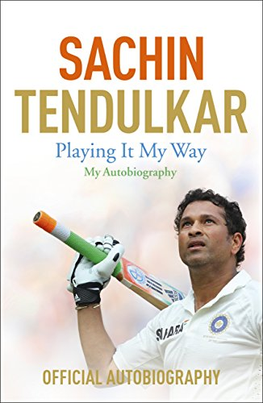
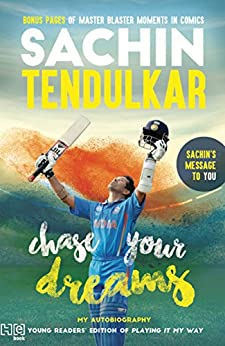

Playing it My Way


Sachin Tendulkar, in full Sachin Ramesh Tendulkar, (born April 24, 1973, Bombay [Mumbai], India), Indian professional cricket player, considered by many to be one of the greatest batsmen of all time. In 2012 he became the first cricketer to score 100 centuries (100 runs in a single innings) in international play. Tendulkar was given his first bat when he was 11 years of age. As a 14-year-old, he used it to score 329 out of a world-record stand of 664 in a school match. A year later he scored a century on his first-class debut for Bombay (Mumbai), and at age 16 years 205 days he became India’s youngest Test (international) cricketer, making his debut against Pakistan in Karachi in November 1989. When he was 18 he scored two centuries in Australia (148 in Sydney and 114 in Perth), and in 1994 he scored 179 against the West Indies. In August 1996, at age 23, Tendulkar was made captain of his country’s team.
Although India was defeated in the semifinals of the 1996 World Cup, Tendulkar emerged as the tournament’s top run scorer, with 523 runs. In 1998 he was chosen for the Rajiv Gandhi Khel Ratna Award, the highest award given to an Indian athlete, for his outstanding performance in the 1997–98 season. India was defeated by Australia in the 1999 World Cup, failing to advance past the round of six, and was soundly defeated by both Australia and South Africa in series later that year. In the 2003 World Cup, however, Tendulkar helped his team advance as far as the finals. Though India was again defeated by Australia, Tendulkar, who averaged 60.2, was named the man of the tournament.
Tendulkar made history in December 2005 when he scored his record-breaking 35th century in Test play against Sri Lanka. The feat was accomplished in a total of 125 Tests and allowed Tendulkar to surpass the prolific Indian run scorer Sunil Gavaskar. In June 2007 Tendulkar reached another major milestone when he became the first player to record 15,000 runs in one-day international (ODI) play, and in November 2011 he became the first batsman to score 15,000 runs in Test play. One month later he scored a historic “double century” in a contest against South Africa, becoming the first man in history to record 200 runs in a single innings of ODI play. He was named the 2010 International Cricket Council (ICC) Cricketer of the Year. In an ODI match against Bangladesh in March 2012, Tendulkar scored his record-setting 100th international century—which included both Test (51 centuries) and ODI (49 centuries) play. He retired from ODI cricket later that year, and in 2013 he ended a six-year stint with the Indian Premier League (as a member of the Mumbai Indians) and retired from Test cricket, ending his playing days with records for the most career international runs (34,357) and Test runs (15,921). Throughout his long career Tendulkar was consistently ranked among the game’s best batsmen. He was often likened to Australia’s Don Bradman in his single-minded dedication to scoring runs and the certainty of his strokeplay off both front and back foot. In 2012 Tendulkar became a member of the Rajya Sabha, the upper chamber of the Indian parliament—the first active athlete to join that body; he was nominated to the post, and his term ended in 2018. In 2014 he became the first sportsman to receive India’s highest civilian honour, the Bharat Ratna. Tendulkar was inducted into the International Cricket Council Hall of Fame in 2019.